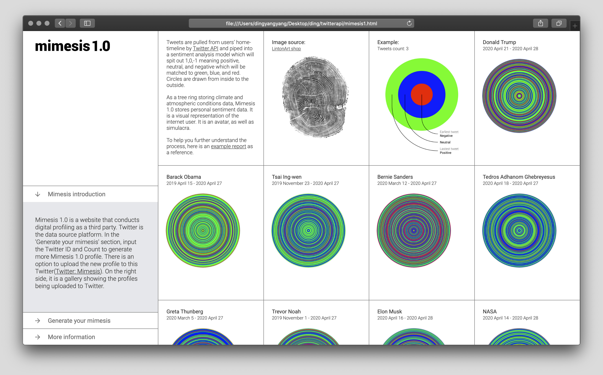
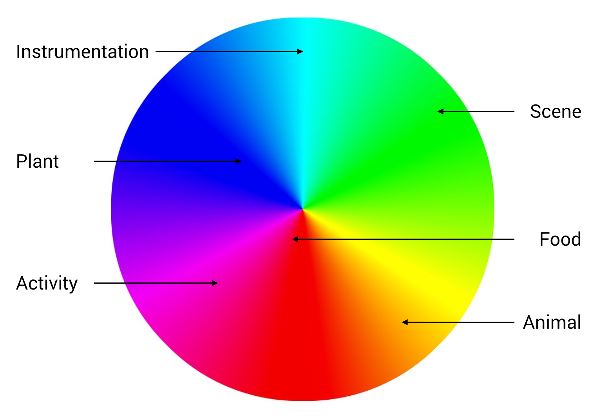
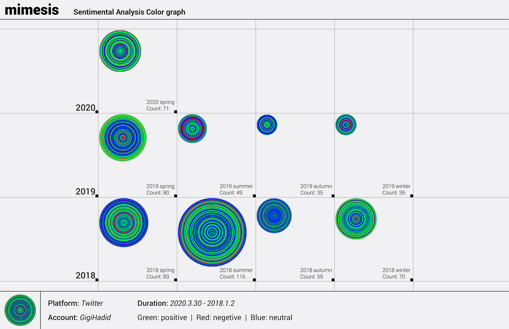
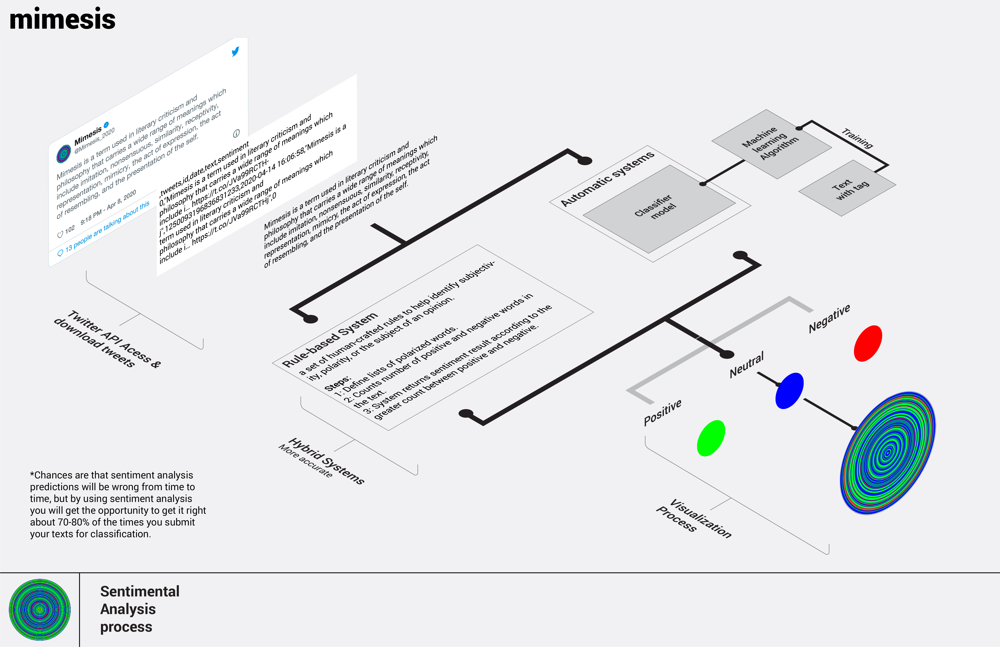
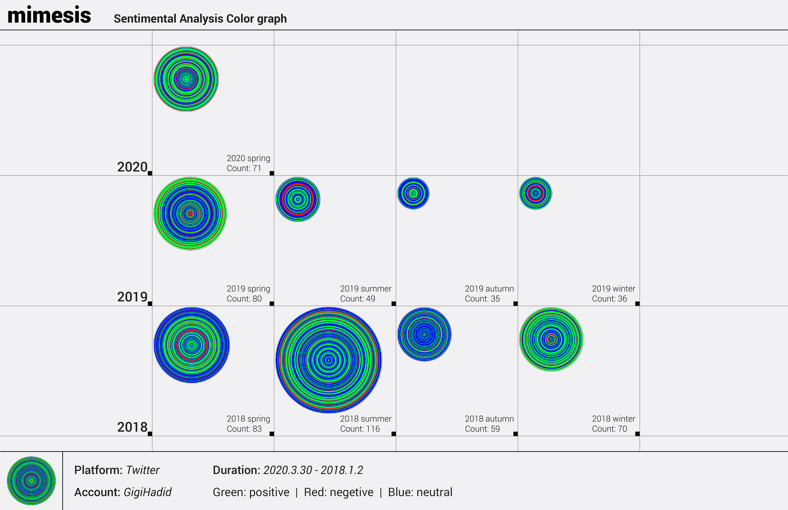
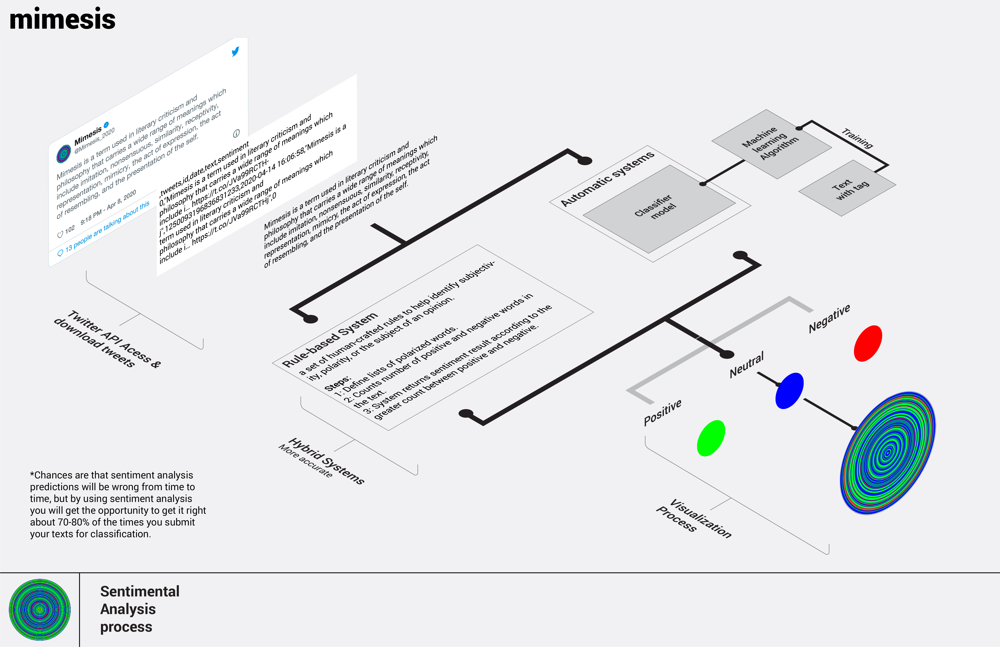
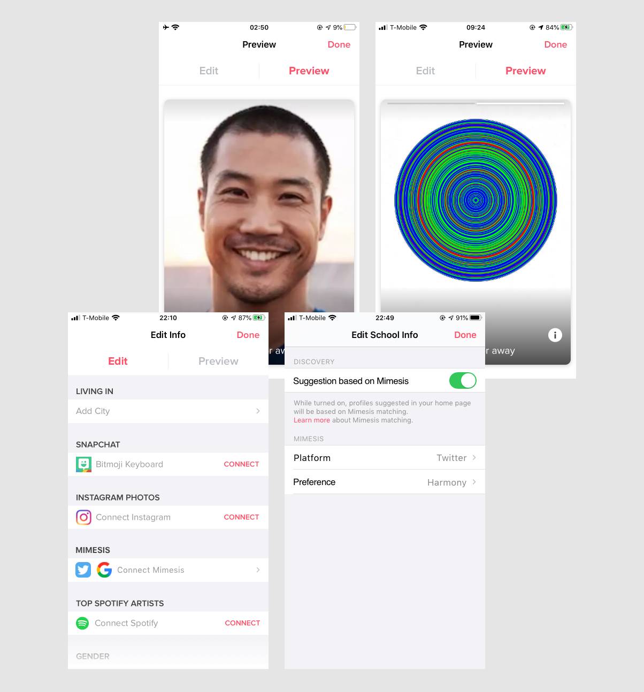

Digital profiling is the process of gathering and analyzing information that exists online about an individual. Platforms who provide services always have control of this powerful tool. As a result, I used Twitter API as the principle medium to conduct 'digital profiling' as a third party. The visual identity of the new digital profile is not an ads interest list anymore, but a graph that stores personal information that could be used as an avatar. On top of the new visual identity, I speculated several possible applications of the new visual outcome. The idea put forward in this thesis is that shifting the purpose of digital profiling toward being human-centered rather than advertising-driven may draw worthwhile arguments about the practicality and policy issues. My point is to demonstrate my future vision or wish for this technology and propose a mutually beneficial strategy for tech companies.
mimesis is a thesis project initiated and developed by Yangyang Ding. Yangyang is a master’s degree candidate in Industrial Design at RISD. His thesis advisory committee consists of
Agatha Haines,
Minkyoung Kim, and
Nic Schumann. Also special thanks to
Paolo Cardini,
Benjamin Jurgensen, and
Benjamin Vu.
mimesis1.0
Twitter is the central platform involved in the process. Twitter API has three aggregated streams of Tweets, which are home timeline, user timeline, and mention timeline. The home time- line consists of retweets and the user's tweets, which represent the user's thoughts. Mimesis1.0 pulls tweets from the Gigi Hadid home timeline and then pipes tweets into a sentiment analysis model which will spit out 1,0,-1 as sentimental results meaning positive, neutral and negative. After that, it uses Processing to match these digits to green, red and blue and draws circles from inside to the outside. As a tree ring storing climate and atmospheric conditions data, Mime- sis1.0 stores personal sentiment data. It is a visual representation of the internet user. It is an avatar, as well as simulacra.

The goal of this website is to bring access to a broader range of audiences other than GitHub users. At the same time, it uses Mimesis as a medium to build a community that is also linked to a Twitter account.
The audience could input their information and submit their request in the 'view your Mimesis' section. Their Mimesis will be drawn and replace the placeholder. The new graph is also available for download. Their new requests will be updated in new blocks emerging after 'the latest request' block.
Special thanks to Benjamin Vu for helping composing javascript for this site.
mimesis2.0
Mimesis2.0 is the speculative result based on the same process as mimesis1.0, which is extracting data, conducting analysis, and drawing the result. The difference between 1.0 and 2.0 is not only replacing the sentiment model with the
cluster analysis mode
but also much higher complexity during the process. The MobileNet model in RunwayML(a democratized machine learning tool for artists and designers) is the one that I have used and tested for 2.0. Because this low fidelity model performs similar to the required cluster analysis model, which needs to be trained by enormous labeled datasets, the list of which will refer to the popular synsets in imagenet. After data is piped into the model, it generates several clusters. The names of these clusters are subsets of the labels in the data set, which will be
mapped to colors.

Cluster analysis model
Color matching
Application scenarios
As mentioned before, the new ‘digital profiling’ visual identity will be hosted in the same context, which means corporates still hold control in hands. It is also a try-out by the third party, which is also a small win. The other potential application scenarios outlined below are one step further. It doesn’t mean these scenarios are against the context. It also doesn’t mean that there is no space for these scenarios to survive. The difference is how much control is given back to users. Projects like Nobias (Google extension), Alias (filter for Google Home), Gobo (social media filter) are great paradigms. These applications could be experiments, third party plugins, or actual products. Before carrying out applications, they need to be a proof of concept that could generate revenue through further experimentation, research, and policy development.
Each application consists of one visual outcome and one piece of description. The extrapolation is the extension of the past trajectory. The mediums vary from reports, to designs, to videos.
Personal Report
 



This personal report derives from the Mimesis1.0 functioning as further analysis of the Mimesis1.0 graph.
In RSPH's research report ‘Social Media and Young People's Mental Health and Wellbeing, five social media platforms, Youtube, Twitter, Facebook, Snapchat, and Instagram, are the primary targets in the survey, which is conducted among around 1,500 14 to 24-year-old people. Fourteen factors are being asked during the survey, including awareness, anxiety, loneliness, sleep, and self-expression. The result was Youtube ranked first and was the only positive platform among them all. Twitter ranked in 2nd place, then Facebook, Snapchat, and Instagram took last place.
At the same time, there is emerging research on the relationship between mental health and social media. 'We review recent work that utilizes social media "big data" in conjunction with associated technologies like natural language processing and machine learning to address pressing problems in population-level mental health surveillance and research, focusing both on technological advances and core ethical challenges.' Thus, this personal Twitter report might become auxiliary material for mental health analysis.
According to the trait of Twitter API and tweets object, there are two methods to filter tweets. The first method that twitter currently provides is seven parameters: name, count, since_id (from when), max_id (until when), trim_user, exclude_replies, and include_entities. When the request is submitted, these parameters help filter tweets. The second method is selecting the attributes in the tweet objects to write into a dictionary, and then filtering the dictionary for specific values of attributes. Filtering tweets according to different parameters might cater to different perspectives and needs.
Avatar for Tinder

The media uses representations - images, words, and characters or persona - to convey ideas and values. On different social media platforms, we use different packages of information to display ourselves and interact with each other. There are also auxiliary tools like avatars creating applications to recreate an animation yourself. But still, the process of creating these avatars is an accumulation of socially and historically constructed concepts. In other words, gender, skin color, race, body shape, and face shape are still ingrained in those avatars. Prejudices are built into existing institutions and structures, and even though they look like a new medium, however, they still create barriers and limit opportunities.
Mimesis 1.0 is a customized graph, generated from the text by sentiment analysis, model, and processing. Although there is bias ingrained in constructing a deep learning model, results could be a new form of identity representation. Is it more natural and neutral? Does it break barriers and limits?
Tinder users can choose to connect Mimesis like Snapchat and Instagram photos. From a user's perspective, bridging Snapchat and Instagram with Tinder increases the plurality of information, though it might turn into a concern for some users. Mimesis shares the same idea offering Tinder users an option to show more about themselves. On top of that, Mimesis provides an alternative for matching algorithms. In color practice, there are multiple choices to collocate different colors. What if matching algorithms could use Mimesis as a source to incorporate color combination theory to expand users' options? Users' cards will be pushed to others based not only on age, distance, and gender preferences but also on their Mimesis matches.
Beauty filter for text editing